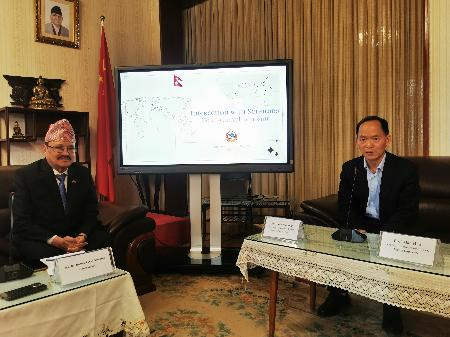
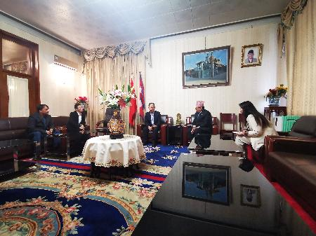
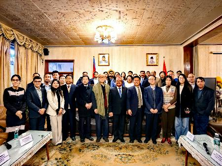

3月17日，尼泊尔驻华大使馆在北京举办中尼友谊学术交流论坛，探讨先进科学技术在尼泊尔的应用和发展，深化和拓展中尼双边关系。该论坛吸引了四十余位中国学者及在京工作和学习的尼泊尔籍科技从业者参加，中国科学院加德满都科教中心主任姚檀栋院士、执行主任汪涛研究员、DB Kattel副研究员和徐田利博士受邀出席此次活动。
论坛上，尼泊尔驻华大使比什努•施雷斯塔先生发表讲话，首先对出席论坛的学者表示欢迎，中尼山水相依，世代友好。他表示先进科学技术对尼泊尔的经济和社会发展至关重要，尤其是在解决能源、环境、交通和医疗等民生相关的问题上。他鼓励尼泊尔和中国的科技从业者加强合作，中国科研人员更多的向尼泊尔传授先进科学技术和创新经验。
姚檀栋院士介绍了加德满都科教中心和第三极环境计划(TPE)建设和发展历程，已经在气候变化、生态环境、灾害监测预警和可持续发展等方面开展了广泛合作，还为尼方培养了大量科技人才，资助约100名尼方青年学生来华攻读博士和硕士学位，40多位青年学者来华开展学术交流。未来，加德满都科教中心将与尼驻华使馆加强工作联系，持续促进双方友好交流，积极推动多边和地区性的科技创新合作。
此次科技论坛的举办，为尼泊尔和中国在科技领域的合作和交流搭建了重要平台，与会其他专家学者分享了各自领域的经验和技术，以及他们对尼泊尔科技发展的建议，推动了尼泊尔和中国在科技领域的合作和发展。

姚檀栋院士在论坛上发表讲话

比什努•施雷斯塔大使单独会见中心代表

会议合影